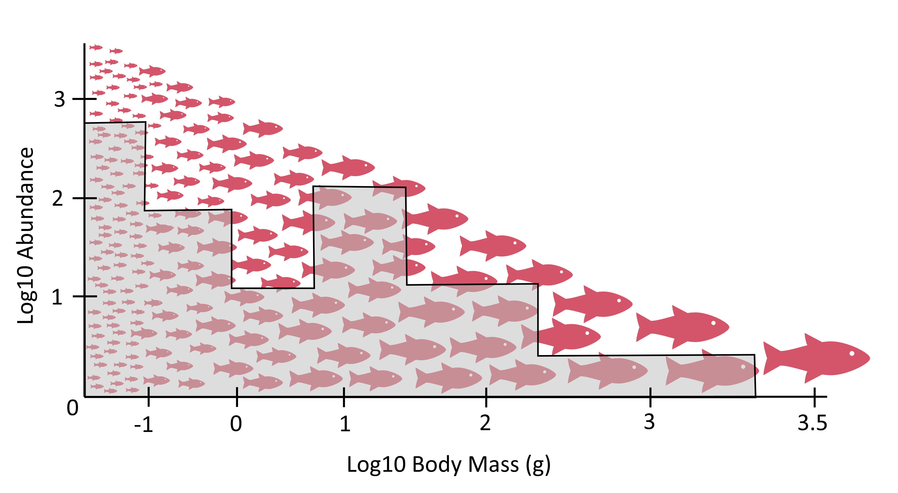
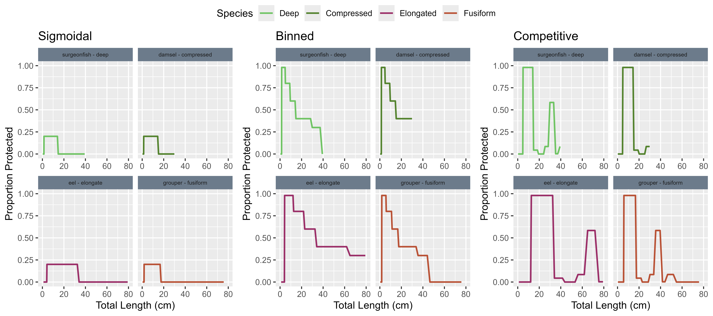
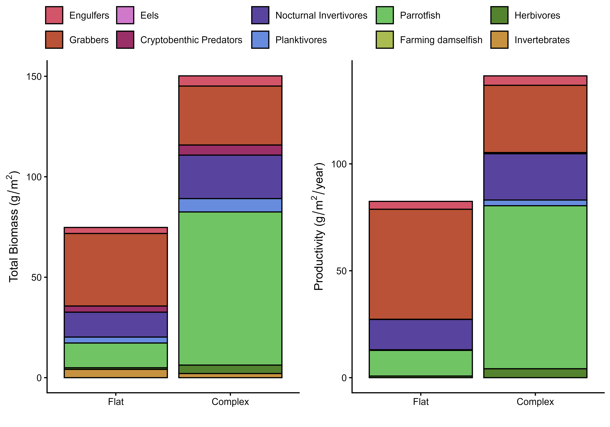

Getting started with MizerReef
mizerReef.RmdOverview
The mizerReef package enables multi-species dynamic size-spectrum modelling in R, with an explicit, mechanistic representation of habitat structural complexity. In this vignette, we walk through the basic steps needed to build and explore your first MizerReef model, including:
- Installing MizerReef
- Setting species parameters
- Setting the refuge profile
- Creating your first model
- Tuning the steady state
- Exploring results
- Changing the refuge profile
Model context: Habitat structure mediates system dynamics by providing predation refuge. The most effective refuges fit prey while excluding predators, so refuge use is primarily governed by body size. In systems with high structural complexity (for example, coral reefs), these patterns are reflected in the size structure of fish assemblages.
Because refuge protection is size-dependent, size-spectrum models provide a natural framework for exploring how benthic structure influences community dynamics. MizerReef modifies predator–prey encounter rates to represent the effects of habitat structure, allowing users to explicitly account for changes in refuge availability caused by habitat degradation or modification.
For a detailed description of the model formulation and supporting references, see Chapter 3 of Modelling Coral Reef Futures: Exploring the role of structural complexity in sustaining ecosystem services (PhD Thesis, VUW).
MizerReef builds on the mizer package
MizerReef is an extension of the mizer
package and uses many of the same functions and parameters. If you are
new to mizer, want a refresher on the general workflow, or
would like more background on size-spectrum modelling, visit the mizer website. You may also
find the mizer
course helpful.
Installing MizerReef
MizerReef is currently only available from GitHub. To install the
latest version, use the devtools package:
install.packages("devtools")
devtools::install_github("cmbeese/mizerReef")MizerReef depends on the mizer and
mizerExperimental packages. If not already installed, R
will prompt you to install them automatically. Without them, you will
not be able to use all of the features in mizerReef.
After installation, load Mizer, mizerExperimental, and MizerReef in each new R session:
💡 Tip: Be sure to load mizerReef last. Some of the functions in mizerReef override functions in mizer, so loading in this order ensures that correct versions are used.
Use a recent version of R and RStudio for best results. For troubleshooting or more details, see the MizerReef documentation or the GitHub repository.
Setting species parameters
The species parameter table is the foundation of any mizer or mizerReef model. It describes the biological and ecological traits of each species in your system.
💡 Tip: Many users prefer to create this table in a spreadsheet program (like Excel or Google Sheets) and then import it into R as a data frame.
Species parameters required by base mizer
For a multi-species mizer model, only the following columns are strictly required in the species parameter data frame:
-
species: Name of the species or group -
w_maxorl_max: Maximum observed weight or length (if providing length, you must also provide length-weight conversion parametersaandb)
By default, mizerReef creates multispecies mizer models.
mizerReef is not compatible with trait-based or community models at this time. See multispecies mizer models to learn more about the differences between the three model types in mizer.You can tune your model to a specific system using abundance data if you also provide:
-
biomass_observed: Observed abundance for each species. -
biomass_cutoff: Minimum weight of organisms caught by survey methods (helps with tuning)
The choice in units for your data is arbitrary as long as you are consistent.
Abundance data can be given as numbers per area, numbers per volume or total numbers for the entire study area. See Units in Mizer for more information.
Since MizerReef’s vulnerability and refuge dynamics depend on size, it is good to include parameters related to growth and size rather than relying on defaults, including:
-
w_mat: Maturity weight (important for life history & growth) -
beta&sigma: Lognormal predation kernel parameters (set for each species, can use other kernels) - Length-to-weight conversion parameters
aandb
You should also provide the interaction matrix, which specifies predator-prey relationships between species.
Each value in the interaction matrix, ranging from 0 to 1, represents the strength of interaction between a predator (row) and its prey (column). These can represent spatial overlap, diet preferences, or other ecological factors influencing predation rates.
It is important that the order of rows and columns in the interaction matrix matches the order of species in the species parameter data frame within the params object. To view the example interaction matrix included with MizerReef, run:
data("karpata_int")
karpata_intSee Setting Parameters in Mizer for details on additional optional columns and their defaults.
Additional species parameters needed for mizerReef
mizerReef extends mizer by modeling reef-specific dynamics. To utilise the predation vulnerability and unstructured resource dynamics in MizerReef, add these columns to your species parameter data frame:
By default, MizerReef will assign values to any missing parameters so that the corresponding feature is disabled, and issue a warning. See [setRefuge()], [setAlgaeParams()] and [setDetritusParams()] for additional details.
💡 Tip: When importing your species parameter table from a CSV, make sure that missing values are represented as NA or blank cells, not zeros.
You can load your species parameter data frame into R using standard functions likeread.csv()orreadxl::read_excel(), depending on your file format. Ensure that the column names in your data frame match those expected by MizerReef. Usena.strings = c(““,” “)inread.csv()to ensure blanks are read asNArather than0.
Example mizerReef species parameters
MizerReef includes example model parameters with the package. See the Model Description for more details on these example data.
The included species parameter data frame
(Caribbean_10_species) is based on fish assemblage data
from a Caribbean reef site with relatively low fishing pressure. The
full species parameter data frame for the Caribbean_10 example is shown
below:
💡 Tip: The Karpata species parameters also include optional columns like
w_mat,age_mat,k_vb, andks. Include as many parameters as you have data for to assist in the calibration process.
Setting the refuge profile
The refuge profile defines how predation refuge availability varies with prey size (see Figure 1). This is a key feature of MizerReef that allows you to represent the effects of habitat structure on predator-prey interactions.

Figure 1. Conceptual schematic of the refuge profile. The red fish represents the modelled fish spectrum. Individuals protected from predators by refuge are covered by the grey box. The remaining individuals are vulnerable to predation.
MizerReef currently provides three methods to define how
refuge availability varies with prey size:
Sigmoidal: Good for data-poor reefs or when you want a simple, smooth profile.
-
a smooth declining function controlled by a threshold length (L_refuge) and a maximum proportion protected
-
method_paramsshould be a list or data frame with:-
L_refuge: numeric, threshold length (cm) at which refuge protection starts to decline. -
max_protection: numeric, maximum proportion of individuals protected by refuge (0–1).
-
Example:
method_params = list(L_refuge = 10, max_protection = 0.8) -
Binned: Good for theoretical experiments or when you have coarse bin information.
-
user-specified length bins with a constant protection proportion inside each bin
-
method_paramsshould be a data frame or matrix with two columns:-
length_bin: numeric, the upper length (cm) of each bin. -
protection: numeric, the proportion of individuals protected by refuge (0–1) within each length bin.
-
Example:
method_params = data.frame( length_bin = c(5, 10, 20, 40), protection = c(1, 0.5, 0, 0.2) ) -
Competitive: divides refuges among similarly sized competitors. Use this when you have empirical refuge density data.
-
uses refuge density (no./m^2) for each length bin, protection depends on fish density within each bin (density-dependent)
-
method_paramsshould be a data frame or matrix with two columns:-
length_bin: numeric, the upper length (cm) of each bin. -
refuge_density: numeric, the density of refuges (no./m^2) available for each length bin.
-
Example:
method_params = data.frame( length_bin = c(5, 10, 20, 40), refuge_density = c(2, 1, 0.5, 3) ) -
Refuge profiles and body shape
This plot shows example refuge profiles created using each method and how they differ based on species body shape characteristics. The same set of species groups can receive different protection based on their body shape, the chosen method, and method-specific parameters.

Figure 2. Example refuge profiles for three methods (sigmoidal, binned, competitive) applied to species with different body shapes (deep, compressed, elongate, fusiform).
The package includes several example refuge profiles for tuning and demonstration.
The Caribbean_10 species reef example model uses a competitive refuge profile based on field data. Use the code below to view the built-in refuge profile:
data(karpata_refuge)## Warning in data(karpata_refuge): data set 'karpata_refuge' not found
karpata_refuge## start_L end_L refuge_density
## 1 0 5 7.53333333
## 2 5 10 1.40000000
## 3 10 15 0.70833333
## 4 15 20 0.28333333
## 5 20 25 0.10000000
## 6 25 30 0.05000000
## 7 30 35 0.04166667
## 8 35 40 0.03333333
## 9 40 45 0.03333333
## 10 45 50 0.04166667See example models for more details on built-in refuge profiles.
Creating your first model
Once you have your species parameters (with reef-specific columns)
and interaction matrix ready, you can create a MizerParams
object using the newReefParams() function. This function
extends mizer’s newMultispeciesParams() by
adding reef-specific arguments, checking user-supplied parameters, and
setting sensible defaults for any missing reef-specific values.
💡 Tip: When creating a new
MizerReefParamsobject, you can’t use the competitive refuge method when calibrating biomasses because it is density-dependent.
Use a tuning profile instead.
The best practice if you have refuge density data is to first create a model using the binned method that approximates your refuge profile to reach an initial steady state and calibrate biomasses, then switch to the competitive method. The package includes example refuge profiles for tuning (tuning_profile) and a simple step function
(step_tune) that can be used for this purpose.
Caribbean_10_model <- newReefParams(group_params = Caribbean_10_species,
interaction = Caribbean_10_interaction,
method = "binned",
method_params = tuning_profile)After creating your initial params object, you will
typically run through a tuning sequence to calibrate biomasses and
adjust reproduction, growth, and unstructured resource parameters to
match observed data.
Tuning the steady state
Reaching a steady state that matches observed biomasses and growth rates is nontrivial and often unique for each system. The procedure developed here was suitable for the Karpata reef data but may differ depending on your calibration data. In brief, the tuning procedure is as follows:
- Start with plausible species parameters. Create an initial
paramsobject withnewReefParams()using a binned or sigmoidal refuge profile that mimics your data. - Reduce the density-dependence of reproduction by reducing the reproduction level. Run to a steady using reefSteady(). Check the resource abundance and scale if needed.
- Iterate through
calibrateReefBiomass(),matchBiomasses(),matchReefGrowth()andreefSteady()to reach a satisfactory steady state.
- Change to your desired refuge method (for example, competitive)
using
setRefuge(), then re-tune the steady state by iterating/repeating step 3. - Tune the reproduction parameters according to the mizer blog recipe to reach the final steady state.
💡 Tip: One of the most useful summary plots for steady state calibration is
plotBiomassObservedVsModel(), which shows the total biomass for each species in your model vs. observed values.
💡 Tip: There are many reasonable ways to reach a suitable steady state. This recipe only represents one approach. You may need to adjust the steps or order depending on your system and data.
The tuning approach used for MizerReef is adapted from the 5-step recipe described in the mizer blog.
For more information on tuning MizerReef models, see the MizerReef Steady State recipe.
Exploring results
After reaching a steady state, you should explore the results to ensure they make ecological sense and match expectations for your system. MizerReef provides several plotting functions to help you visualize and interpret your model outputs:
-
Refuge profile at steady state:
Use [plotRefuge()] to see the proportion of individuals protected by refuge across sizes and species.plotRefuge(params) -
Diet composition:
Use [plotDiet()] to display the proportion of each prey type in the diet of each predator.plotDiet(params) -
Total biomass for each species:
Use [plotBiomass()] to view steady-state biomasses.plotBiomass(params)
💡 Tip:
mizerReef does not override it — instead it registers aplotBiomass()is mizer’s own function.getBiomass()method formizerReefmodels so that algae and detritus biomass are automatically included alongside species biomass, regardless of the order in whichmizerandmizerReefare loaded.
-
Productivity by species:
Use [plotProductivity()] to view total productivity for each species.plotProductivity(params)
For a full list of available summary and diagnostic plots, see MizerReef summary plots and mizer’s plotting results reference page.
Changing the refuge profile
Changing the refuge profile allows you to explore how habitat structure affects model dynamics, such as biomass and productivity. This is useful for simulating habitat degradation or restoration scenarios.
Workflow:
- Use
newRefuge()to change the refuge profile in your model. - Run
reefSteady()several times to reach a new steady state. - Compare results (e.g., biomass and productivity) using built-in plotting functions.
# Change to a non-complex (no refuge) profile
non_complex <- newRefuge(Caribbean_10_model, new_method = "noncomplex")
# Run to steady state
non_complex <- non_complex |> reefSteady() |> reefSteady() |> reefSteady()
# Compare biomass and productivity between models
all_biom11 <- plot2TotalBiomass(non_complex, Caribbean_10_model,
name1 = "Flat",
name2 = "Complex",
stack = TRUE)
all_prod11 <- plot2Productivity(non_complex, Caribbean_10_model,
name1 = "Flat",
name2 = "Complex",
stack = TRUE) 
Figure 4 The biomass (left) and productivity (right) for a model with no predation refuge (non-complex) and a model with predation refuge based on data from Karpata reef (complex). Colours represent species groups.
As we can see in Figure 4, removing refuge availability reduces both biomass and productivity across all species.
💡 Tip: If your results look odd after changing the refuge profile, run
It needs to run enough times to reach a new steady state. To learn more about modifying refuge profiles and their parameters, see [setRefuge()].reefSteady().
For more information on the example data used in this vignette, see the mizerReef model description vignette. To learn more about running simulations with mizerReef, see the mizerReef degradation vignette.
Links and further reading
MizerReef documentation and tutorials:
- MizerReef documentation: Main package documentation and reference manual
- MizerReef model description vignette: Detailed explanation of model structure and example workflows
- MizerReef degradation vignette: Simulating habitat degradation and its effects
- MizerReef Steady State recipe: Step-by-step guide for tuning models to steady state
- Example models and built-in data: Reference for example species, interaction matrices, and refuge profiles
Plotting and function references:
- MizerReef summary plots: List of available summary and diagnostic plots
- setRefuge() function documentation: Details on modifying refuge profiles and parameters
- Mizer plotting results reference: Reference for plotting functions in mizer
General mizer resources:
- Official mizer getting started guide: General introduction to mizer
Further research:
- Modelling Coral Reef Futures: Exploring the role of structural complexity in sustaining ecosystem services (PhD Thesis, VUW): In-depth research and context for MizerReef
Session info
## ─ Session info ───────────────────────────────────────────────────────────────
## setting value
## version R version 4.6.1 (2026-06-24)
## os Linux Mint 22.3
## system x86_64, linux-gnu
## ui X11
## language en-GB
## collate en_GB.UTF-8
## ctype en_GB.UTF-8
## tz Europe/London
## date 2026-07-06
## pandoc 3.1.3 @ /usr/bin/ (via rmarkdown)
## quarto 1.9.37 @ /usr/local/bin/quarto
##
## ─ Packages ───────────────────────────────────────────────────────────────────
## package * version date (UTC) lib source
## assertthat 0.2.1 2019-03-21 [2] CRAN (R 4.6.0)
## bslib 0.11.0 2026-05-16 [2] CRAN (R 4.6.1)
## cachem 1.1.0 2024-05-16 [2] CRAN (R 4.6.0)
## cli 3.6.6 2026-04-09 [2] CRAN (R 4.6.0)
## data.table 1.18.4 2026-05-06 [2] CRAN (R 4.6.0)
## desc 1.4.3 2023-12-10 [2] CRAN (R 4.6.0)
## digest 0.6.39 2025-11-19 [2] CRAN (R 4.6.0)
## dplyr 1.2.1 2026-04-03 [2] CRAN (R 4.6.0)
## evaluate 1.0.5 2025-08-27 [2] CRAN (R 4.6.0)
## farver 2.1.2 2024-05-13 [2] CRAN (R 4.6.0)
## fastmap 1.2.0 2024-05-15 [2] CRAN (R 4.6.0)
## fs 2.1.0 2026-04-18 [2] CRAN (R 4.6.0)
## generics 0.1.4 2025-05-09 [2] CRAN (R 4.6.0)
## ggplot2 4.0.3 2026-04-22 [2] CRAN (R 4.6.0)
## glue 1.8.1 2026-04-17 [2] CRAN (R 4.6.0)
## gtable 0.3.6 2024-10-25 [2] CRAN (R 4.6.0)
## htmltools 0.5.9 2025-12-04 [2] CRAN (R 4.6.1)
## htmlwidgets 1.6.4 2023-12-06 [2] CRAN (R 4.6.0)
## httr 1.4.8 2026-02-13 [2] CRAN (R 4.6.0)
## jquerylib 0.1.4 2021-04-26 [2] CRAN (R 4.6.0)
## jsonlite 2.0.0 2025-03-27 [2] CRAN (R 4.6.0)
## knitr 1.51 2025-12-20 [2] CRAN (R 4.6.0)
## lazyeval 0.2.3 2026-04-04 [2] CRAN (R 4.6.0)
## lifecycle 1.0.5 2026-01-08 [2] CRAN (R 4.6.0)
## lubridate 1.9.5 2026-02-04 [2] CRAN (R 4.6.0)
## magrittr 2.0.5 2026-04-04 [2] CRAN (R 4.6.0)
## mizer * 3.1.0.9000 2026-07-03 [2] local
## mizerExperimental * 3.1.0.9000 2026-07-06 [2] Github (sizespectrum/mizerExperimental@056de93)
## mizerReef * 2.1.0 2026-07-06 [1] local
## otel 0.2.0 2025-08-29 [2] CRAN (R 4.6.0)
## pillar 1.11.1 2025-09-17 [2] CRAN (R 4.6.0)
## pkgconfig 2.0.3 2019-09-22 [2] CRAN (R 4.6.0)
## pkgdown 2.2.0 2025-11-06 [2] CRAN (R 4.6.1)
## plotly 4.12.0 2026-01-24 [2] CRAN (R 4.6.0)
## plyr 1.8.9 2023-10-02 [2] CRAN (R 4.6.0)
## purrr 1.2.2 2026-04-10 [2] CRAN (R 4.6.0)
## R6 2.6.1 2025-02-15 [2] CRAN (R 4.6.0)
## ragg 1.5.2 2026-03-23 [2] CRAN (R 4.6.0)
## RColorBrewer 1.1-3 2022-04-03 [2] CRAN (R 4.6.0)
## Rcpp 1.1.1-1.1 2026-04-24 [2] CRAN (R 4.6.0)
## reshape2 1.4.5 2025-11-12 [2] CRAN (R 4.6.0)
## rlang 1.2.0 2026-04-06 [2] CRAN (R 4.6.0)
## rmarkdown 2.31 2026-03-26 [2] CRAN (R 4.6.0)
## S7 0.2.2 2026-04-22 [2] CRAN (R 4.6.0)
## sass 0.4.10 2025-04-11 [2] CRAN (R 4.6.1)
## scales 1.4.0 2025-04-24 [2] CRAN (R 4.6.0)
## sessioninfo 1.2.4 2026-06-04 [2] CRAN (R 4.6.0)
## stringi 1.8.7 2025-03-27 [2] CRAN (R 4.6.0)
## stringr 1.6.0 2025-11-04 [2] CRAN (R 4.6.0)
## systemfonts 1.3.2 2026-03-05 [2] CRAN (R 4.6.0)
## textshaping 1.0.5 2026-03-06 [2] CRAN (R 4.6.0)
## tibble 3.3.1 2026-01-11 [2] CRAN (R 4.6.0)
## tidyr 1.3.2 2025-12-19 [2] CRAN (R 4.6.0)
## tidyselect 1.2.1 2024-03-11 [2] CRAN (R 4.6.0)
## timechange 0.4.0 2026-01-29 [2] CRAN (R 4.6.0)
## vctrs 0.7.3 2026-04-11 [2] CRAN (R 4.6.0)
## viridisLite 0.4.3 2026-02-04 [2] CRAN (R 4.6.0)
## xfun 0.58 2026-06-01 [2] CRAN (R 4.6.0)
## yaml 2.3.12 2025-12-10 [2] CRAN (R 4.6.0)
##
## [1] /tmp/RtmpEJ2X0i/temp_libpatha0e8ed6e526
## [2] /home/gustav/R/x86_64-pc-linux-gnu-library/4.6
## [3] /usr/local/lib/R/site-library
## [4] /usr/lib/R/site-library
## [5] /usr/lib/R/library
## * ── Packages attached to the search path.
##
## ──────────────────────────────────────────────────────────────────────────────